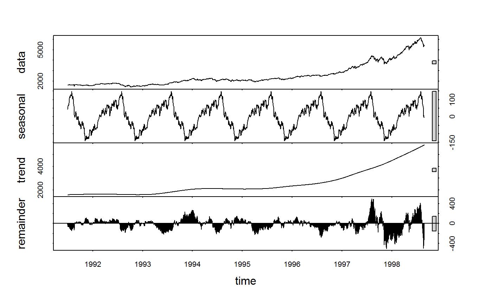

flag.Rdflag is an S3 generic to compute (sequences of) lags and leads. L and F are wrappers around flag representing the lag- and lead-operators, such that L(x,-1) = F(x,1) = F(x) and L(x,-3:3) = F(x,3:-3). L and F provide more flexibility than flag when applied to data frames (i.e. column subsetting, formula input and id-variable-preservation capabilities...), but are otherwise identical.
Note: Since v1.9.0, F is no longer exported, but can be accessed using collapse:::F, or through setting options(collapse_export_F = TRUE) before loading the package. The syntax is the same as L.
flag(x, n = 1, ...)
L(x, n = 1, ...)
# S3 method for default
flag(x, n = 1, g = NULL, t = NULL, fill = NA, stubs = TRUE, ...)
# S3 method for default
L(x, n = 1, g = NULL, t = NULL, fill = NA, stubs = TRUE, ...)
# S3 method for matrix
flag(x, n = 1, g = NULL, t = NULL, fill = NA, stubs = length(n) > 1L, ...)
# S3 method for matrix
L(x, n = 1, g = NULL, t = NULL, fill = NA, stubs = TRUE, ...)
# S3 method for data.frame
flag(x, n = 1, g = NULL, t = NULL, fill = NA, stubs = length(n) > 1L, ...)
# S3 method for data.frame
L(x, n = 1, by = NULL, t = NULL, cols = is.numeric,
fill = NA, stubs = TRUE, keep.ids = TRUE, ...)
# Methods for indexed data / compatibility with plm:
# S3 method for pseries
flag(x, n = 1, fill = NA, stubs = length(n) > 1L, shift = "time", ...)
# S3 method for pseries
L(x, n = 1, fill = NA, stubs = TRUE, shift = "time", ...)
# S3 method for pdata.frame
flag(x, n = 1, fill = NA, stubs = length(n) > 1L, shift = "time", ...)
# S3 method for pdata.frame
L(x, n = 1, cols = is.numeric, fill = NA, stubs = TRUE,
shift = "time", keep.ids = TRUE, ...)
# Methods for grouped data frame / compatibility with dplyr:
# S3 method for grouped_df
flag(x, n = 1, t = NULL, fill = NA, stubs = length(n) > 1L, keep.ids = TRUE, ...)
# S3 method for grouped_df
L(x, n = 1, t = NULL, fill = NA, stubs = TRUE, keep.ids = TRUE, ...)a vector / time series, (time series) matrix, data frame, 'indexed_series' ('pseries'), 'indexed_frame' ('pdata.frame') or grouped data frame ('grouped_df'). Data must not be numeric.
integer. A vector indicating the lags / leads to compute (passing negative integers to flag or L computes leads, passing negative integers to F computes lags).
a factor, GRP object, or atomic vector / list of vectors (internally grouped with group) used to group x.
data.frame method: Same as g, but also allows one- or two-sided formulas i.e. ~ group1 or var1 + var2 ~ group1 + group2. See Examples.
a time vector or list of vectors. Data frame methods also allows one-sided formula i.e. ~time. grouped_df method supports lazy-evaluation i.e. time (no quotes). Either support wrapping a transformation function e.g. ~timeid(time), qG(time) etc.. See also Details on how t is processed.
data.frame method: Select columns to lag using a function, column names, indices or a logical vector. Default: All numeric variables. Note: cols is ignored if a two-sided formula is passed to by.
value to insert when vectors are shifted. Default is NA.
logical. TRUE will rename all lagged / leaded columns by adding a stub or prefix "Ln." / "Fn.".
pseries / pdata.frame methods: character. "time" performs a fully identified time-lag (if the index contains a time variable), whereas "row" performs a simple (group) lag, where observations are shifted based on the present order of rows (in each group). The latter is significantly faster, but requires time series / panels to be regularly spaced and sorted by time within each group.
data.frame / pdata.frame / grouped_df methods: Logical. Drop all identifiers from the output (which includes all variables passed to by or t). Note: For 'grouped_df' / 'pdata.frame' identifiers are dropped, but the "groups" / "index" attributes are kept.
arguments to be passed to or from other methods.
If a single integer is passed to n, and g/by and t are left empty, flag/L/F just returns x with all columns lagged / leaded by n. If length(n)>1, and x is an atomic vector (time series), flag/L/F returns a (time series) matrix with lags / leads computed in the same order as passed to n. If instead x is a matrix / data frame, a matrix / data frame with ncol(x)*length(n) columns is returned where columns are sorted first by variable and then by lag (so all lags computed on a variable are grouped together). x can be of any standard data type.
With groups/panel-identifiers supplied to g/by, flag/L/F efficiently computes a panel-lag/lead by shifting the entire vector(s) but inserting fill elements in the right places. If t is left empty, the data needs to be ordered such that all values belonging to a group are consecutive and in the right order. It is not necessary that the groups themselves are alphabetically ordered. If a time-variable is supplied to t (or a list of time-variables uniquely identifying the time-dimension), the series / panel is fully identified and lags / leads can be securely computed even if the data is unordered / irregular.
Note that the t argument is processed as follows: If is.factor(t) || (is.numeric(t) && !is.object(t)) (i.e. t is a factor or plain numeric vector), it is assumed to represent unit timesteps (e.g. a 'year' variable in a typical dataset), and thus coerced to integer using as.integer(t) and directly passed to C++ without further checks or transformations at the R-level. Otherwise, if is.object(t) && is.numeric(unclass(t)) (i.e. t is a numeric time object, most likely 'Date' or 'POSIXct'), this object is passed through timeid before going to C++. Else (e.g. t is character), it is passed through qG which performs ordered grouping. If t is a list of multiple variables, it is passed through finteraction. You can customize this behavior by calling any of these functions (including unclass/as.integer) on your time variable beforehand.
At the C++ level, if both g/by and t are supplied, flag works as follows: Use two initial passes to create an ordering through which the data are accessed. First-pass: Calculate minimum and maximum time-value for each individual. Second-pass: Generate an internal ordering vector (o) by placing the current element index into the vector slot obtained by adding the cumulative group size and the current time-value subtracted its individual-minimum together. This method of computation is faster than any sort-based method and delivers optimal performance if the panel-id supplied to g/by is already a factor variable, and if t is an integer/factor variable. For irregular time/panel series, length(o) > length(x), and o represents the unobserved 'complete series'. If length(o) > 1e7 && length(o) > 3*length(x), a warning is issued to make you aware of potential performance implications of the oversized ordering vector.
The 'indexed_series' ('pseries') and 'indexed_frame' ('pdata.frame') methods automatically utilize the identifiers attached to these objects, which are already factors, thus lagging is quite efficient. However, the internal ordering vector still needs to be computed, thus if data are known to be ordered and regularly spaced, using shift = "row" to toggle a simple group-lag (same as utilizing g but not t in other methods) can yield a significant performance gain.
x lagged / leaded n-times, grouped by g/by, ordered by t. See Details and Examples.
## Simple Time Series: AirPassengers
L(AirPassengers) # 1 lag
#> Jan Feb Mar Apr May Jun Jul Aug Sep Oct Nov Dec
#> 1949 NA 112 118 132 129 121 135 148 148 136 119 104
#> 1950 118 115 126 141 135 125 149 170 170 158 133 114
#> 1951 140 145 150 178 163 172 178 199 199 184 162 146
#> 1952 166 171 180 193 181 183 218 230 242 209 191 172
#> 1953 194 196 196 236 235 229 243 264 272 237 211 180
#> [ reached getOption("max.print") -- omitted 7 rows ]
flag(AirPassengers) # Same
#> Jan Feb Mar Apr May Jun Jul Aug Sep Oct Nov Dec
#> 1949 NA 112 118 132 129 121 135 148 148 136 119 104
#> 1950 118 115 126 141 135 125 149 170 170 158 133 114
#> 1951 140 145 150 178 163 172 178 199 199 184 162 146
#> 1952 166 171 180 193 181 183 218 230 242 209 191 172
#> 1953 194 196 196 236 235 229 243 264 272 237 211 180
#> [ reached getOption("max.print") -- omitted 7 rows ]
L(AirPassengers, -1) # 1 lead
#> Jan Feb Mar Apr May Jun Jul Aug Sep Oct Nov Dec
#> 1949 118 132 129 121 135 148 148 136 119 104 118 115
#> 1950 126 141 135 125 149 170 170 158 133 114 140 145
#> 1951 150 178 163 172 178 199 199 184 162 146 166 171
#> 1952 180 193 181 183 218 230 242 209 191 172 194 196
#> 1953 196 236 235 229 243 264 272 237 211 180 201 204
#> [ reached getOption("max.print") -- omitted 7 rows ]
head(L(AirPassengers, -1:3)) # 1 lead and 3 lags - output as matrix
#> F1 -- L1 L2 L3
#> [1,] 118 112 NA NA NA
#> [2,] 132 118 112 NA NA
#> [3,] 129 132 118 112 NA
#> [4,] 121 129 132 118 112
#> [5,] 135 121 129 132 118
#> [6,] 148 135 121 129 132
## Time Series Matrix of 4 EU Stock Market Indicators, 1991-1998
tsp(EuStockMarkets) # Data is recorded on 260 days per year
#> [1] 1991.496 1998.646 260.000
freq <- frequency(EuStockMarkets)
plot(stl(EuStockMarkets[,"DAX"], freq)) # There is some obvious seasonality

head(L(EuStockMarkets, -1:3 * freq)) # 1 annual lead and 3 annual lags
#> F260.DAX DAX L260.DAX L520.DAX L780.DAX F260.SMI SMI L260.SMI
#> [1,] 1755.98 1628.75 NA NA NA 1846.6 1678.1 NA
#> [2,] 1754.95 1613.63 NA NA NA 1854.8 1688.5 NA
#> [3,] 1759.90 1606.51 NA NA NA 1845.3 1678.6 NA
#> L520.SMI L780.SMI F260.CAC CAC L260.CAC L520.CAC L780.CAC F260.FTSE
#> [1,] NA NA 1907.3 1772.8 NA NA NA 2515.8
#> [2,] NA NA 1900.6 1750.5 NA NA NA 2521.2
#> [3,] NA NA 1880.9 1718.0 NA NA NA 2493.9
#> FTSE L260.FTSE L520.FTSE L780.FTSE
#> [1,] 2443.6 NA NA NA
#> [2,] 2460.2 NA NA NA
#> [3,] 2448.2 NA NA NA
#> [ reached getOption("max.print") -- omitted 3 rows ]
summary(lm(DAX ~., data = L(EuStockMarkets,-1:3*freq))) # DAX regressed on its own annual lead,
#>
#> Call:
#> lm(formula = DAX ~ ., data = L(EuStockMarkets, -1:3 * freq))
#>
#> Residuals:
#> Min 1Q Median 3Q Max
#> -158.092 -30.174 1.355 28.741 211.844
#>
#> Coefficients:
#> Estimate Std. Error t value Pr(>|t|)
#> (Intercept) -1.030e+03 1.016e+02 -10.141 < 2e-16 ***
#> F260.DAX 1.037e-01 2.621e-02 3.957 8.25e-05 ***
#> L260.DAX -3.544e-01 4.394e-02 -8.066 2.65e-15 ***
#> L520.DAX -2.232e-01 4.116e-02 -5.423 7.75e-08 ***
#> L780.DAX 9.451e-02 4.484e-02 2.107 0.035391 *
#> F260.SMI 4.968e-02 1.554e-02 3.198 0.001441 **
#> SMI 2.616e-01 2.301e-02 11.366 < 2e-16 ***
#> L260.SMI 6.138e-02 2.740e-02 2.240 0.025342 *
#> L520.SMI -2.153e-01 2.707e-02 -7.954 6.15e-15 ***
#> L780.SMI -2.208e-01 3.091e-02 -7.144 2.04e-12 ***
#> F260.CAC -1.392e-01 3.583e-02 -3.884 0.000111 ***
#> CAC 7.165e-01 3.189e-02 22.470 < 2e-16 ***
#> L260.CAC -5.482e-02 3.874e-02 -1.415 0.157455
#> L520.CAC 2.326e-01 4.570e-02 5.090 4.46e-07 ***
#> [ reached getOption("max.print") -- omitted 6 rows ]
#> ---
#> Signif. codes: 0 ‘***’ 0.001 ‘**’ 0.01 ‘*’ 0.05 ‘.’ 0.1 ‘ ’ 1
#>
#> Residual standard error: 49.64 on 800 degrees of freedom
#> (1040 observations deleted due to missingness)
#> Multiple R-squared: 0.9926, Adjusted R-squared: 0.9925
#> F-statistic: 5668 on 19 and 800 DF, p-value: < 2.2e-16
#>
# lags and the lead/lags of the other series
## World Development Panel Data
head(flag(wlddev, 1, wlddev$iso3c, wlddev$year)) # This lags all variables,
#> country iso3c date year decade region income OECD PCGDP
#> 1 <NA> <NA> <NA> NA NA <NA> <NA> NA NA
#> 2 Afghanistan AFG 1961-01-01 1960 1960 South Asia Low income FALSE NA
#> 3 Afghanistan AFG 1962-01-01 1961 1960 South Asia Low income FALSE NA
#> 4 Afghanistan AFG 1963-01-01 1962 1960 South Asia Low income FALSE NA
#> 5 Afghanistan AFG 1964-01-01 1963 1960 South Asia Low income FALSE NA
#> LIFEEX GINI ODA POP
#> 1 NA NA NA NA
#> 2 32.446 NA 116769997 8996973
#> 3 32.962 NA 232080002 9169410
#> 4 33.471 NA 112839996 9351441
#> 5 33.971 NA 237720001 9543205
#> [ reached 'max' / getOption("max.print") -- omitted 1 rows ]
head(L(wlddev, 1, ~iso3c, ~year)) # This lags all numeric variables
#> iso3c year L1.decade L1.PCGDP L1.LIFEEX L1.GINI L1.ODA L1.POP
#> 1 AFG 1960 NA NA NA NA NA NA
#> 2 AFG 1961 1960 NA 32.446 NA 116769997 8996973
#> 3 AFG 1962 1960 NA 32.962 NA 232080002 9169410
#> 4 AFG 1963 1960 NA 33.471 NA 112839996 9351441
#> 5 AFG 1964 1960 NA 33.971 NA 237720001 9543205
#> 6 AFG 1965 1960 NA 34.463 NA 295920013 9744781
head(L(wlddev, 1, ~iso3c)) # Without t: Works because data is ordered
#> iso3c L1.year L1.decade L1.PCGDP L1.LIFEEX L1.GINI L1.ODA L1.POP
#> 1 AFG NA NA NA NA NA NA NA
#> 2 AFG 1960 1960 NA 32.446 NA 116769997 8996973
#> 3 AFG 1961 1960 NA 32.962 NA 232080002 9169410
#> 4 AFG 1962 1960 NA 33.471 NA 112839996 9351441
#> 5 AFG 1963 1960 NA 33.971 NA 237720001 9543205
#> 6 AFG 1964 1960 NA 34.463 NA 295920013 9744781
head(L(wlddev, 1, PCGDP + LIFEEX ~ iso3c, ~year)) # This lags GDP per Capita & Life Expectancy
#> iso3c year L1.PCGDP L1.LIFEEX
#> 1 AFG 1960 NA NA
#> 2 AFG 1961 NA 32.446
#> 3 AFG 1962 NA 32.962
#> 4 AFG 1963 NA 33.471
#> 5 AFG 1964 NA 33.971
#> 6 AFG 1965 NA 34.463
head(L(wlddev, 0:2, ~ iso3c, ~year, cols = 9:10)) # Same, also retaining original series
#> iso3c year PCGDP L1.PCGDP L2.PCGDP LIFEEX L1.LIFEEX L2.LIFEEX
#> 1 AFG 1960 NA NA NA 32.446 NA NA
#> 2 AFG 1961 NA NA NA 32.962 32.446 NA
#> 3 AFG 1962 NA NA NA 33.471 32.962 32.446
#> 4 AFG 1963 NA NA NA 33.971 33.471 32.962
#> 5 AFG 1964 NA NA NA 34.463 33.971 33.471
#> 6 AFG 1965 NA NA NA 34.948 34.463 33.971
head(L(wlddev, 1:2, PCGDP + LIFEEX ~ iso3c, ~year, # Two lags, dropping id columns
keep.ids = FALSE))
#> L1.PCGDP L2.PCGDP L1.LIFEEX L2.LIFEEX
#> 1 NA NA NA NA
#> 2 NA NA 32.446 NA
#> 3 NA NA 32.962 32.446
#> 4 NA NA 33.471 32.962
#> 5 NA NA 33.971 33.471
#> 6 NA NA 34.463 33.971
# Regressing GDP on its's lags and life-Expectancy and its lags
summary(lm(PCGDP ~ ., L(wlddev, 0:2, ~iso3c, ~year, 9:10, keep.ids = FALSE)))
#>
#> Call:
#> lm(formula = PCGDP ~ ., data = L(wlddev, 0:2, ~iso3c, ~year,
#> 9:10, keep.ids = FALSE))
#>
#> Residuals:
#> Min 1Q Median 3Q Max
#> -16776.5 -102.2 -17.2 91.5 12277.1
#>
#> Coefficients:
#> Estimate Std. Error t value Pr(>|t|)
#> (Intercept) -333.93994 61.04617 -5.470 4.62e-08 ***
#> L1.PCGDP 1.31959 0.01021 129.270 < 2e-16 ***
#> L2.PCGDP -0.31707 0.01029 -30.815 < 2e-16 ***
#> LIFEEX -17.77368 35.47772 -0.501 0.616
#> L1.LIFEEX 45.76286 65.87124 0.695 0.487
#> L2.LIFEEX -21.43005 34.98964 -0.612 0.540
#> ---
#> Signif. codes: 0 ‘***’ 0.001 ‘**’ 0.01 ‘*’ 0.05 ‘.’ 0.1 ‘ ’ 1
#>
#> Residual standard error: 787.3 on 8609 degrees of freedom
#> (4561 observations deleted due to missingness)
#> Multiple R-squared: 0.9976, Adjusted R-squared: 0.9976
#> F-statistic: 7.26e+05 on 5 and 8609 DF, p-value: < 2.2e-16
#>
## Indexing the data: facilitates time-based computations
wldi <- findex_by(wlddev, iso3c, year)
head(L(wldi, 0:2, cols = 9:10)) # Again 2 lags of GDP and LIFEEX
#> iso3c year PCGDP L1.PCGDP L2.PCGDP LIFEEX L1.LIFEEX L2.LIFEEX
#> 1 AFG 1960 NA NA NA 32.446 NA NA
#> 2 AFG 1961 NA NA NA 32.962 32.446 NA
#> 3 AFG 1962 NA NA NA 33.471 32.962 32.446
#> 4 AFG 1963 NA NA NA 33.971 33.471 32.962
#> 5 AFG 1964 NA NA NA 34.463 33.971 33.471
#> 6 AFG 1965 NA NA NA 34.948 34.463 33.971
#>
#> Indexed by: iso3c [1] | year [6 (61)]
head(L(wldi$PCGDP)) # Lagging an indexed series
#> [1] NA NA NA NA NA NA
#>
#> Indexed by: iso3c [1] | year [6 (61)]
summary(lm(PCGDP ~ L(PCGDP,1:2) + L(LIFEEX,0:2), wldi)) # Running the lm again
#>
#> Call:
#> lm(formula = PCGDP ~ L(PCGDP, 1:2) + L(LIFEEX, 0:2), data = wldi)
#>
#> Residuals:
#> Min 1Q Median 3Q Max
#> -16776.5 -102.2 -17.2 91.5 12277.1
#>
#> Indexed by: iso3c [4] | year [5 (61)]
#>
#> Coefficients:
#> Estimate Std. Error t value Pr(>|t|)
#> (Intercept) -333.93994 61.04617 -5.470 4.62e-08 ***
#> L(PCGDP, 1:2)L1 1.31959 0.01021 129.270 < 2e-16 ***
#> L(PCGDP, 1:2)L2 -0.31707 0.01029 -30.815 < 2e-16 ***
#> L(LIFEEX, 0:2)-- -17.77368 35.47772 -0.501 0.616
#> L(LIFEEX, 0:2)L1 45.76286 65.87124 0.695 0.487
#> L(LIFEEX, 0:2)L2 -21.43005 34.98964 -0.612 0.540
#> ---
#> Signif. codes: 0 ‘***’ 0.001 ‘**’ 0.01 ‘*’ 0.05 ‘.’ 0.1 ‘ ’ 1
#>
#> Residual standard error: 787.3 on 8609 degrees of freedom
#> (4561 observations deleted due to missingness)
#> Multiple R-squared: 0.9976, Adjusted R-squared: 0.9976
#> F-statistic: 7.26e+05 on 5 and 8609 DF, p-value: < 2.2e-16
#>
summary(lm(PCGDP ~ ., L(wldi, 0:2, 9:10, keep.ids = FALSE))) # Same thing
#>
#> Call:
#> lm(formula = PCGDP ~ ., data = L(wldi, 0:2, 9:10, keep.ids = FALSE))
#>
#> Residuals:
#> Min 1Q Median 3Q Max
#> -16776.5 -102.2 -17.2 91.5 12277.1
#>
#> Indexed by: iso3c [4] | year [5 (61)]
#>
#> Coefficients:
#> Estimate Std. Error t value Pr(>|t|)
#> (Intercept) -333.93994 61.04617 -5.470 4.62e-08 ***
#> L1.PCGDP 1.31959 0.01021 129.270 < 2e-16 ***
#> L2.PCGDP -0.31707 0.01029 -30.815 < 2e-16 ***
#> LIFEEX -17.77368 35.47772 -0.501 0.616
#> L1.LIFEEX 45.76286 65.87124 0.695 0.487
#> L2.LIFEEX -21.43005 34.98964 -0.612 0.540
#> ---
#> Signif. codes: 0 ‘***’ 0.001 ‘**’ 0.01 ‘*’ 0.05 ‘.’ 0.1 ‘ ’ 1
#>
#> Residual standard error: 787.3 on 8609 degrees of freedom
#> (4561 observations deleted due to missingness)
#> Multiple R-squared: 0.9976, Adjusted R-squared: 0.9976
#> F-statistic: 7.26e+05 on 5 and 8609 DF, p-value: < 2.2e-16
#>
## Using grouped data:
library(magrittr)
wlddev %>% fgroup_by(iso3c) %>% fselect(PCGDP,LIFEEX) %>% flag(0:2)
#> PCGDP L1.PCGDP L2.PCGDP LIFEEX L1.LIFEEX L2.LIFEEX
#> 1 NA NA NA 32.446 NA NA
#> 2 NA NA NA 32.962 32.446 NA
#> 3 NA NA NA 33.471 32.962 32.446
#> 4 NA NA NA 33.971 33.471 32.962
#> 5 NA NA NA 34.463 33.971 33.471
#> 6 NA NA NA 34.948 34.463 33.971
#> 7 NA NA NA 35.430 34.948 34.463
#> 8 NA NA NA 35.914 35.430 34.948
#> 9 NA NA NA 36.403 35.914 35.430
#> 10 NA NA NA 36.900 36.403 35.914
#> 11 NA NA NA 37.409 36.900 36.403
#> [ reached 'max' / getOption("max.print") -- omitted 13165 rows ]
#>
#> Grouped by: iso3c [216 | 61 (0)]
wlddev %>% fgroup_by(iso3c) %>% fselect(year,PCGDP,LIFEEX) %>% flag(0:2,year) # Also using t (safer)
#> year PCGDP L1.PCGDP L2.PCGDP LIFEEX L1.LIFEEX L2.LIFEEX
#> 1 1960 NA NA NA 32.446 NA NA
#> 2 1961 NA NA NA 32.962 32.446 NA
#> 3 1962 NA NA NA 33.471 32.962 32.446
#> 4 1963 NA NA NA 33.971 33.471 32.962
#> 5 1964 NA NA NA 34.463 33.971 33.471
#> 6 1965 NA NA NA 34.948 34.463 33.971
#> 7 1966 NA NA NA 35.430 34.948 34.463
#> 8 1967 NA NA NA 35.914 35.430 34.948
#> 9 1968 NA NA NA 36.403 35.914 35.430
#> 10 1969 NA NA NA 36.900 36.403 35.914
#> [ reached 'max' / getOption("max.print") -- omitted 13166 rows ]
#>
#> Grouped by: iso3c [216 | 61 (0)]